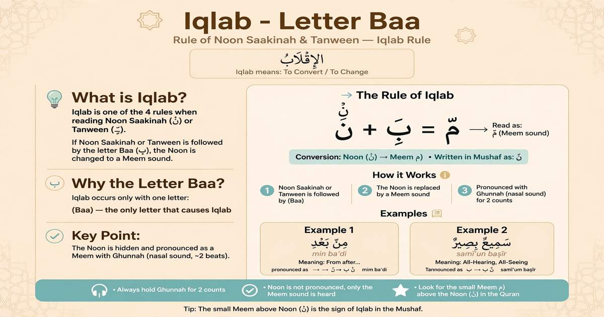

What Is Iqlab? Baa Letter

Iqlab is one of the Tajweed rules related to Noon Sakinah and Tanween. The word Iqlab means changing or converting one sound into another.
What Is Iqlab?
Iqlab occurs when Noon Sakinah or Tanween is followed by the letter Baa (ب). The Noon sound is changed into a hidden Meem sound while maintaining Ghunnah.
The Only Iqlab Letter
Unlike Idgham and Ikhfa, Iqlab has only one letter:
Baa (ب)
How Does Iqlab Work?
When Noon Sakinah or Tanween comes immediately before Baa (ب), the Noon sound changes into a hidden Meem sound accompanied by Ghunnah.
🔄 Iqlab Pattern
Noon Sakinah / Tanween → Hidden Meem + Ghunnah → Baa (ب)
Iqlab and Ghunnah
The converted Meem sound is accompanied by Ghunnah. The nasal sound is held for approximately two counts before continuing into the Baa.
⏱ Ghunnah: approximately 2 counts.
Iqlab Example from the Quran
A well-known example of Iqlab is:
مِن بَعْدِ
Here, Noon Sakinah in مِن comes before Baa ب, so Iqlab is applied.
How to Recognize Iqlab
- Look for Noon Sakinah or Tanween.
- Look at the following letter.
- If the following letter is Baa (ب), Iqlab applies.
- Change the Noon sound into a hidden Meem sound.
- Produce Ghunnah for approximately two counts.
- Continue into the Baa sound.
💡 Easy Way to Remember Iqlab
Iqlab = Baa (ب). There is only one Iqlab letter, so remembering the letter ب makes this Tajweed rule easy to identify.
📚 Tajweed Series – 9 Rules
Continue learning Tajweed with the complete series:
Learn Quran and Tajweed Online
Want to improve your Quran recitation with a qualified teacher? Book a free trial lesson with Al Shimaa Quran Academy.